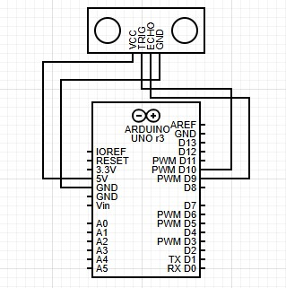

Rover Project
UltraSonic Tutorial
This tutorial introduces an ultrasonic sensor paired with an Arduino Uno, a simple yet effective device for measuring distances. The ultrasonic sensor works by emitting sound waves and calculating the time it takes for the echo to return, converting that into a precise distance reading. Visitors following this tutorial can expect to learn how to connect the sensor to an Arduino Uno, code, and read real-time distance data.
In an autonomous rover mission, three ultrasonic sensors can be strategically implemented to create an effective obstacle detection and avoidance subsystem. By positioning the sensors at the front, left, and right of the rover, the system can continuously monitor its surroundings for obstacles. These sensors work together to detect objects within their range by sending out sound waves and measuring the time it takes for the echoes to return, providing real-time distance data. When integrated into the rover's control system, this setup enables the rover to make informed navigation decisions. For instance, if the front sensor detects an obstacle, the rover can compare distance readings from the left and right sensors to decide the best path to avoid the obstacle. This redundancy ensures that the rover can adapt to various environments, whether it's navigating tight spaces or maneuvering around larger obstructions, enhancing its autonomy and reliability during missions.
A list of required hardware
1. Arduino Uno
2. Breadboard
3. HC-SR04 Ultrasonic Distance sensor
4. 4 Jumper wires
5. Power unit

Sample Arduino sketch code
const int trig_pin = 9;
const int echo_pin = 10;
float timing = 0.0;
float distance = 0.0;
void setup()
{
pinMode(echo_pin, INPUT);
pinMode(trig_pin, OUTPUT);
digitalWrite(trig_pin, LOW);
Serial.begin(9600);
}
void loop()
{
digitalWrite(trig_pin, LOW);
delay(2);
digitalWrite(trig_pin, HIGH);
delay(10);
digitalWrite(trig_pin, LOW);
timing = pulseIn(echo_pin, HIGH);
distance = (timing * 0.034) / 2;
Serial.print("Distance: ");
Serial.print(distance);
Serial.print("cm | ");
Serial.print(distance / 2.54);
Serial.println("in")
delay(100);
}